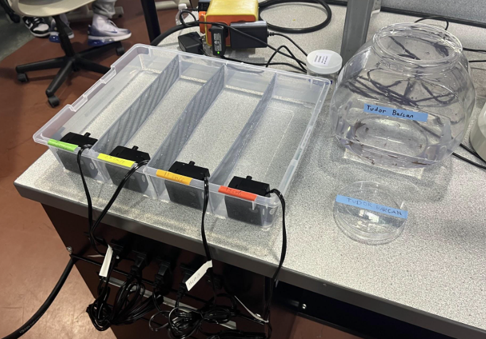
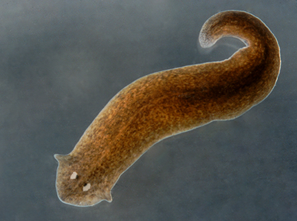
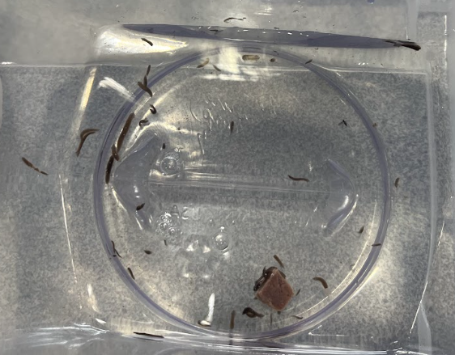
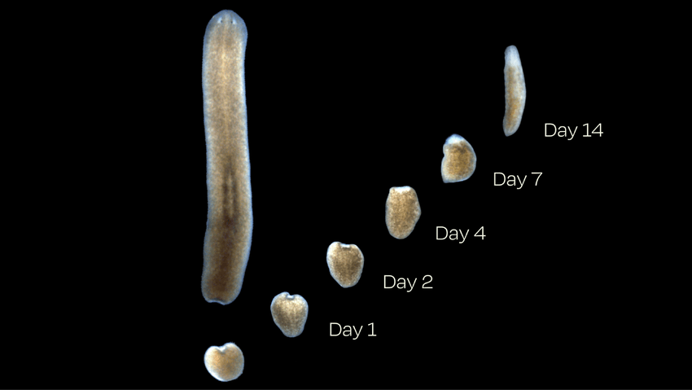

Planaria are flatworms with the capabilities of fully regenerating themselves.
Previous studies show:
Studying water current explores a real environmental aspect.
Regeneration requires the movement of cells:
Goal: Test how varying intensities of underwater currents can influence planarian regeneration (growth in length) from the tail to the head


Hypothesis: When subjected to increased water flow speeds, planarian tail ends
will regenerate at different rates compared to fragments from planarians
placed in still water over four days.
Prediction: Planarian tail ends subjected to the highest tested underwater
current (13 cm/s) would have the highest detectable difference in tail growth
compared to those in still water.